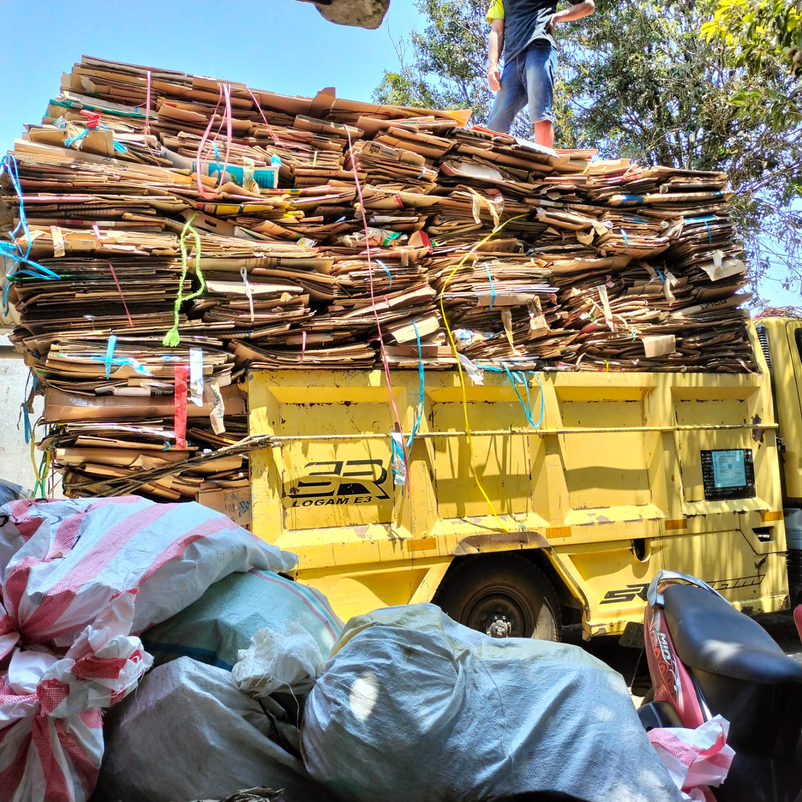
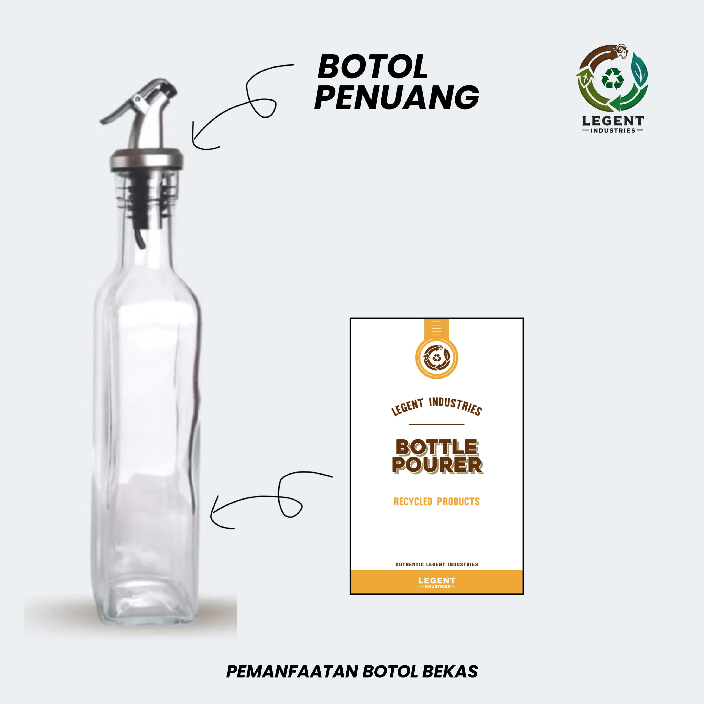
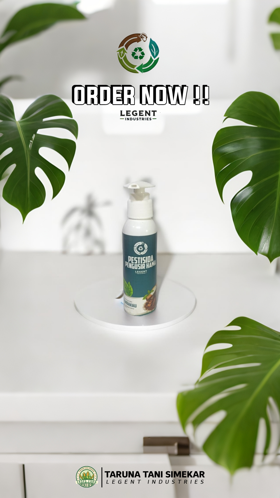
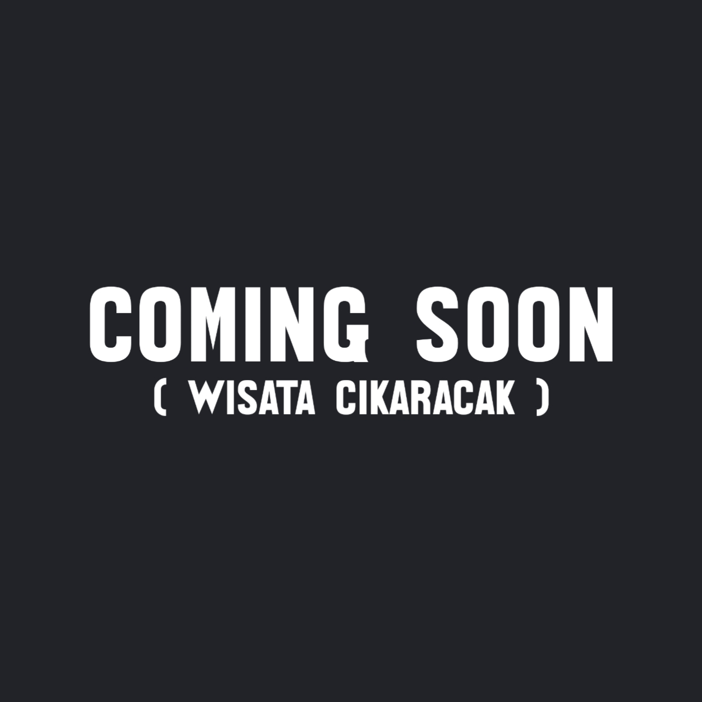
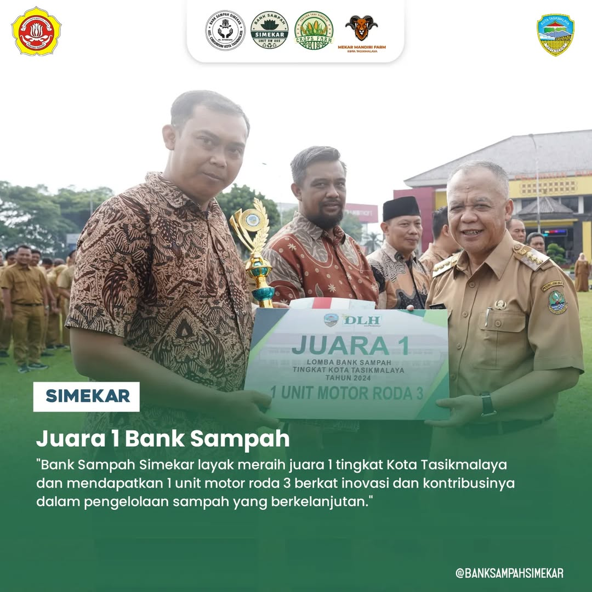

Tentang Kami
Bank Sampah Simekar didirikan pada 23 Desember 2022 oleh para pemuda setempat untuk menciptakan lingkungan yang bersih dan sehat melalui pengelolaan sampah yang efektif.
 Pelajari Lebih LanjutInovasi Kami
Kami mengembangkan inovasi seperti pertanian, perikanan, peternakan, dan budidaya maggot untuk memanfaatkan sampah organik secara optimal.
 Visi Kami
Menjadikan Setianagara sebagai kampung wisata edukasi dan rekreasi melalui edukasi pertanian, perikanan, dan pengelolaan sampah.
Pencapaian
Pada tahun 2025, Bank Sampah Simekar meraih juara pertama dalam lomba bank sampah tingkat Kota Tasikmalaya.
